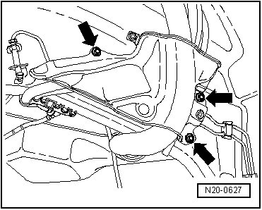
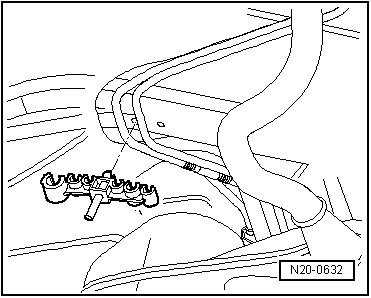
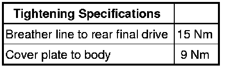

Breather Line
Breather Line
Removing
- Remove the rear right wheel housing liner.
- Remove the cover plate - arrows -.

- Unclip the breather line on the longitudinal member and under the fuel filler tube.

- Remove the breather line from the breather connection on the rear final drive.
Installing
Install in reverse sequence; note the following points:
- The connectors of both breather lines must lock with each other.
- Route the breather line so that it is free of kinks.
- Clip the breather line under the fuel filler tube.
- Make sure the breather line is securely fastened.
- If the breather line - B - was removed or loosened from the rear final drive (--> upper illustration), the be sure to note the tightening specification.
- Install the cover plate - arrows -; note the tightening specification.

- Install the rear right wheel housing liner.